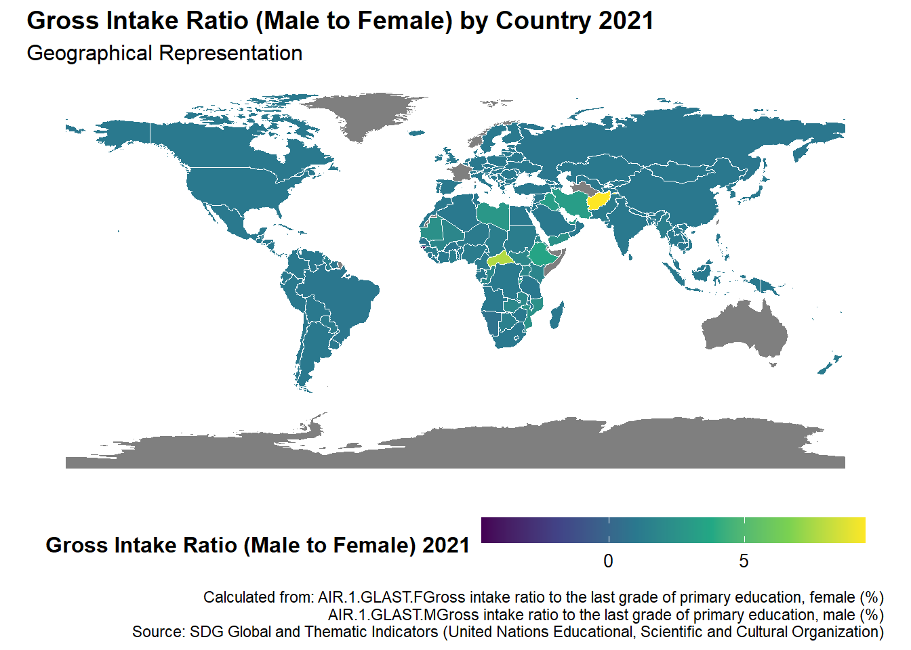
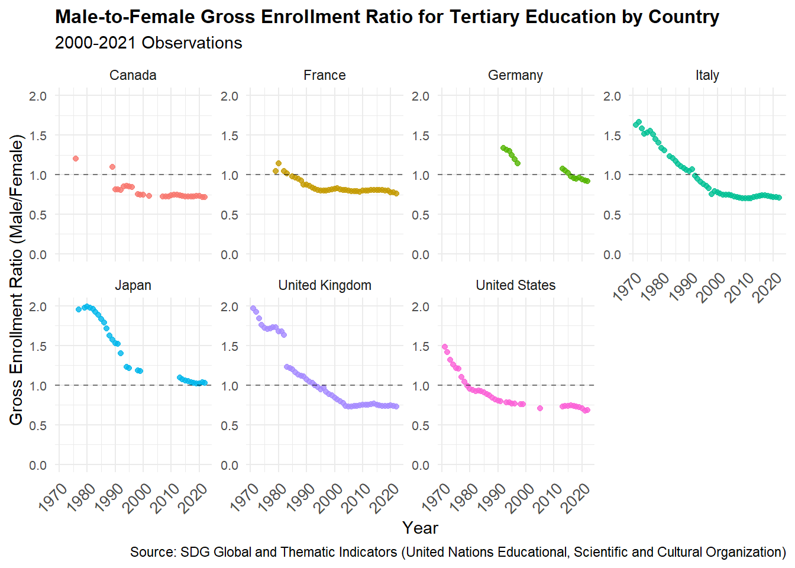
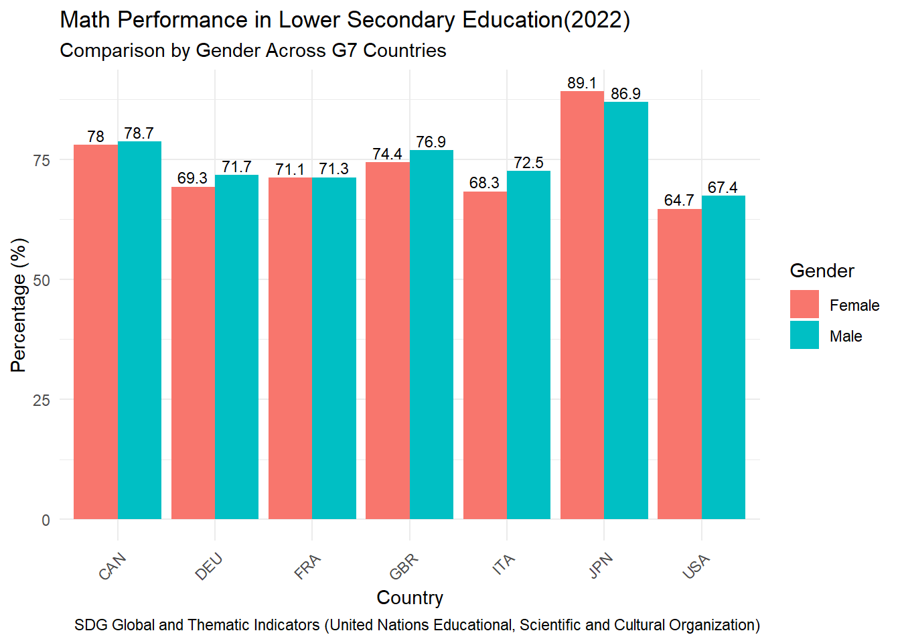
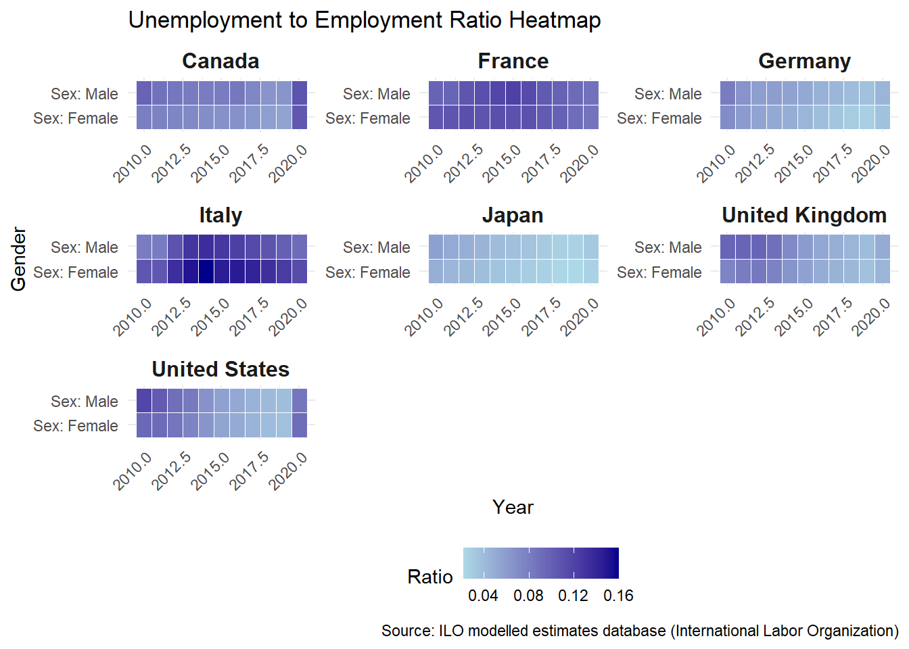
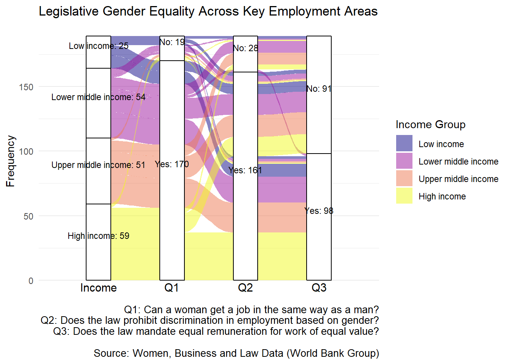
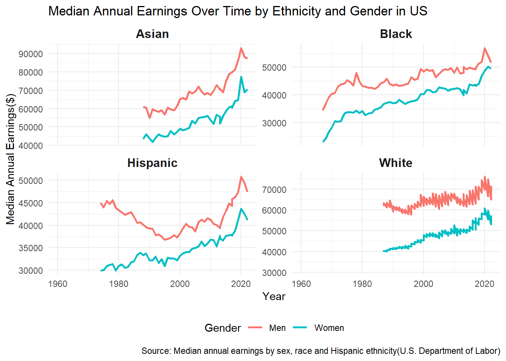
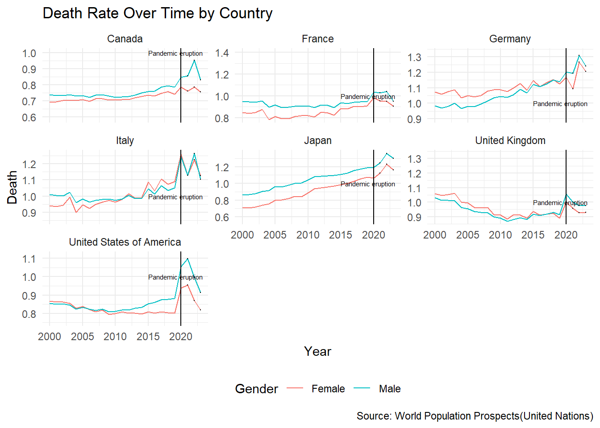
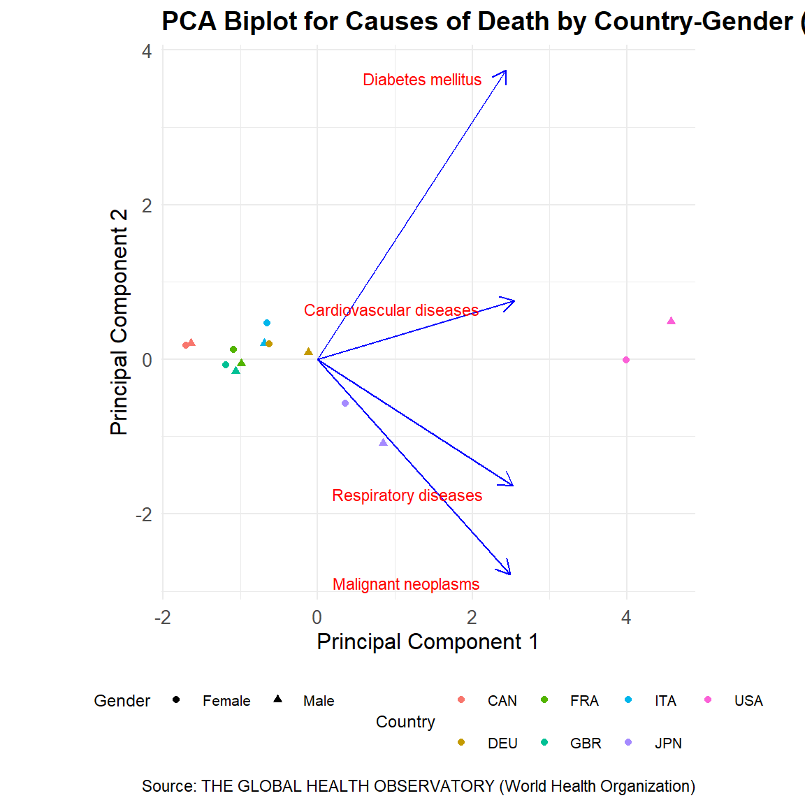
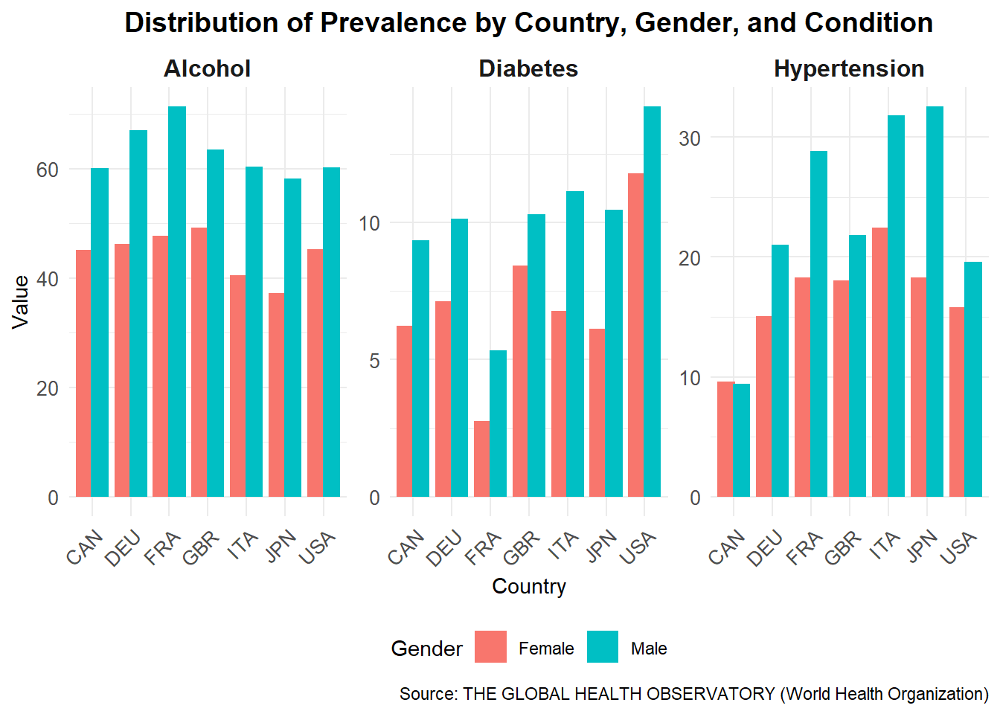

In order to analyze gender inequality in education, employment and health, we analyzed the data in these fields and did exploratory research on them. Main results are presented as follows:
3.1 Gender equality in education is achieved in G7 countries, both primary and tertiary.
In this part we will analyze the gender equality or inequality in education. We will first take a look at gender inequality in the intake ratio of primary schools.
Code
library(tidyr)library(dplyr)library(ggplot2)library(tidyverse)library(readr)library(ggplot2)library(ggridges)library(zoo)library(sf)education <-read_csv("SDG_DATA_NATIONAL.csv")selected_indicators <-c("AIR.1.GLAST.M", "AIR.1.GLAST.F")gross_intake <-education |>filter(indicator_id %in% selected_indicators)gross_intake_ratio <- gross_intake |>filter(indicator_id %in%c("AIR.1.GLAST.M", "AIR.1.GLAST.F")) |>mutate(Gender =ifelse(indicator_id =="AIR.1.GLAST.F", "Female", "Male"))|>select(country_id, year, Gender, value)|>pivot_wider(names_from = Gender, values_from = value)|>mutate(Ratio = Male / Female) |>complete(country_id, year =2021)gross_intake_ratio <- gross_intake_ratio |>group_by(country_id) |>mutate(Ratio =na.spline(Ratio, na.rm =FALSE)) |>ungroup()|>filter(year ==2021)world <- rnaturalearth::ne_countries(scale ="medium", returnclass ="sf")map_data <- world |>left_join(gross_intake_ratio, by =c("iso_a3"="country_id"))ggplot(map_data) +geom_sf(aes(fill = Ratio), color ="white") +scale_fill_viridis_c(option ="viridis", name ="Gross Intake Ratio (Male to Female) 2021" ) +labs(title ="Gross Intake Ratio (Male to Female) by Country 2021",subtitle ="Geographical Representation",caption="Calculated from: AIR.1.GLAST.F Gross intake ratio to the last grade of primary education, female (%)AIR.1.GLAST.M Gross intake ratio to the last grade of primary education, male (%)Source: SDG Global and Thematic Indicators (United Nations Educational, Scientific and Cultural Organization)" ) +theme_minimal() +theme(legend.position ="bottom",legend.key.width =unit(1.5, "cm"), legend.key.height =unit(0.5, "cm"), legend.title =element_text(size =12, face ="bold"),legend.text =element_text(size =10),plot.title =element_text(face ="bold", size =14),plot.subtitle =element_text(size =12),axis.text =element_blank(),axis.title =element_blank(),panel.grid =element_blank() )

The dataset used for this geographical map provides insights into the gross intake ratio for the last grade of primary education, categorized by gender. “AIR.1.GLAST.F” is Gross intake ratio to the last grade of primary education for female, “AIR.1.GLAST.M” is the one for male. To visualize the gender difference, we calculated the ratio of male to female gross intake ratio to the last grade of primary education. This ratio is a measure of gender parity in education, where a ratio of 1 indicates equality, a ratio greater than 1 indicates male bias, and a ratio less than 1 indicates female bias.
Countries shaded in green and teal represent regions where gender parity is nearly achieved, indicating equal participation of boys and girls in reaching the last grade of primary school. We found that many countries in North America, South America and Western Europe almost achieve gender equality in 2021. In contrast, regions shaded in yellow and lighter green highlight areas with male-biased participation, where boys are more likely than girls to complete primary education. This pattern is evident in some parts of Asia and Africa, where we suspected cultural or systemic barriers may be the reason. Countries shaded in grey indicates all missing value for all years, where we could not impute the gross intake ratio for 2021.
In general, we could observe approximate gender equality in intake ratio of primary schools in North America, South America, Europe and East Asia. There is gender inequality against female in intake ratio of some part of West Asia and Africa. Then we will focus on the enrollment ratio on gender of tertiary education, which includes universities, colleges and trade schools.
Code
selected_indicators <-c("GER.5T8.F", "GER.5T8.M")selected_countries <-c("USA", "CAN", "GBR", "FRA", "DEU", "ITA", "JPN")teritary_enroll<- education |>filter(indicator_id %in% selected_indicators, country_id %in% selected_countries)teritary_enroll_clean <- teritary_enroll |>filter(indicator_id %in%c("GER.5T8.F", "GER.5T8.M")) |>mutate(Gender =ifelse(indicator_id =="GER.5T8.F", "Female", "Male"),country_id =case_when( country_id =="USA"~"United States", country_id =="CAN"~"Canada", country_id =="GBR"~"United Kingdom", country_id =="FRA"~"France", country_id =="DEU"~"Germany", country_id =="ITA"~"Italy", country_id =="JPN"~"Japan",TRUE~ country_id # Keep other country codes as is ))|>select(country_id, year, Gender, value)|>pivot_wider(names_from = Gender, values_from = value)|>mutate(Ratio = Male / Female)ggplot(teritary_enroll_clean, aes(x = year, y = Ratio, color = country_id)) +geom_point(size =1.5, alpha =0.8) +# Scatter pointsgeom_hline(yintercept =1, linetype ="dashed", color ="black", alpha =0.5) +# Reference line at y = 1labs(title ="Male-to-Female Gross Enrollment Ratio for Tertiary Education by Country",subtitle ="2000-2021 Observations",x ="Year",y ="Gross Enrollment Ratio (Male/Female)",caption="Source: SDG Global and Thematic Indicators (United Nations Educational, Scientific and Cultural Organization)" ) +facet_wrap(~country_id, scales ="free_y", nrow =2) +# Separate panels for each countryscale_y_continuous(limits =c(0, 2)) +theme_minimal() +theme(axis.text.y =element_text(size =8),axis.text.x =element_text(size =10, angle =45, hjust =1),plot.title =element_text(face ="bold", size =12), )+guides(color ="none")

This scattered dot plot visualizes the male-to-female gross enrollment ratio for tertiary education across G7 countries over time. The ratio is calculated by dividing the male gross enrollment ratio for tertiary education by the female gross enrollment ratio. A ratio of 1, represented by the vertical dashed line, indicates gender parity. A ratio greater than 1 indicates male bias, while a ratio less than 1 indicates female bias in tertiary enrollment.
The plot shows that most G7 countries have moved towards gender parity or female bias over time. For example, Germany, Italy, and the United States show a clear trend towards female bias in tertiary enrollment. Japan has recently achieved gender parity. Some values are missing for these countries. However, no imputation was applied because the observable patterns provide sufficient clarity.
From this diagram we can conclude that enrollment of tertiary education begin from gender inequality against women, transits to gender equality, and approaches to enrollment in favor of women these year in countries in G7 except Japan, where it generally achieves gender equality. Then how does student perform at school by gender? The following diagram take mathematics in secondary schools as an example.
Code
selected_indicators <-c("MATH.LOWERSEC.F", "MATH.LOWERSEC.M")math<-education |>filter(indicator_id %in% selected_indicators, country_id %in% selected_countries)math_clean <- math %>%filter(indicator_id %in%c("MATH.LOWERSEC.F", "MATH.LOWERSEC.M")) |>mutate(Gender =ifelse(indicator_id =="MATH.LOWERSEC.F", "Female", "Male") )|>filter(year ==2022)ggplot(math_clean, aes(x = country_id, y = value, fill = Gender)) +geom_bar(stat ="identity", position =position_dodge(width =0.9)) +geom_text(aes(label =round(value, 1)), position =position_dodge(width =0.9), vjust =-0.3, size =3 ) +labs(title ="Math Performance in Lower Secondary Education(2022)",subtitle ="Comparison by Gender Across G7 Countries",x ="Country",y ="Percentage (%)",fill ="Gender",caption="SDG Global and Thematic Indicators (United Nations Educational, Scientific and Cultural Organization)" ) +theme_minimal() +theme(axis.text.x =element_text(angle =45, hjust =1) )

This bar chart shows the math performance of students in lower secondary education across G7 countries for the year 2022. The performance is measured as the proportion of students achieving at least a minimum proficiency level in mathematics measured by percentages for both females and males (MATH.LOWERSEC.F and MATH.LOWERSEC.M). Female performance is represented by red bars, and male performance is represented by teal bars.
From the chart, it is clear that male and female performance is similar across most G7 countries, though some differences are noticeable. For example, in Japan, females perform better than males. While for all other countries, males slightly outperform females. This analysis highlights the level of gender parity in math performance at the lower secondary level across high-income G7 countries in a recent year.
Therefore, we can conclude that in the field of Education, gender equality of enrollment is generally achieved in G7 countries these years, in both primary and tertiary education. Secondary school students of both gender also perform similarly in mathematics at school. It is worth noticing that gender inequality in enrollment of primary schools is still an issue in the some countries in Asia and Africa.
3.2 Gender equality is generally estabilished in the employment process, but still need further work on the equality of payment
This section we will discuss the gender equality or inequality in employment. First, we will compare unemployment to employment ratio to gender.
Code
library(tidyverse)employment <-read.csv("employment_data.csv")unemployment <-read.csv("umemployment_data.csv") merged_data <- employment %>%select(ref_area.label, sex.label, time, employment_value = obs_value) %>%inner_join( unemployment %>%select(ref_area.label, sex.label, time, unemployment_value = obs_value),by =c("ref_area.label", "sex.label", "time") )%>%# Filter to keep years between 2000 and 2020filter(time >=2010& time <=2020)# Calculate the employment-to-unemployment ratiomerged_data <- merged_data %>%mutate(ref_area.label =str_replace(ref_area.label, "United States of America", "United States"),ref_area.label =str_replace(ref_area.label, "United Kingdom of Great Britain and Northern Ireland", "United Kingdom"),ratio = unemployment_value / employment_value )# Create the heatmapggplot(merged_data, aes(x = time, y = sex.label, fill = ratio)) +geom_tile(color ="white") +facet_wrap(~ ref_area.label, scales ="free") +scale_fill_gradient(low ="lightblue", high ="darkblue", name ="Ratio") +labs(title ="Unemployment to Employment Ratio Heatmap",x ="Year",y ="Gender",fill ="Ratio",caption="Source: ILO modelled estimates database (International Labor Organization)" ) +theme_minimal() +theme(strip.text =element_text(size =12, face ="bold"),axis.text.x =element_text(angle =45, hjust =1),legend.position ="bottom" )

The diagram shows the umemployment to employment ratio between male and female in G7 countries over the years. The darkness of the cells represent the value of ratio between unemployment and employment. Generally, France and Italy have higher unemployment ratio than other countries. There is a significant increase in unemployment ratio after 2020 in United States and Canada, which might due to the COVID-19 pandemic.
When comparing unemployment ratio of male and female in the same country, we would notice that the trends of unemplyment ratio between male and female are similar in all seven countries. Cell with deeper color in male usually correlates with cell with deeper color in female, meaning high unemployment rate in male usually correlates high unemployment rate in female. This shows that there is no significant difference in unemployment trend between male and female over time.
When comparing cells of male and female for the same year, it is worth noting that cells representing female unemployment ratio are deeper than cells representing male unemployment ratio in Italy in most years. It shows that the unemployment ratio of female is significantly higher than male in Italy over the years, indicating gender inequality in unemployment in Italy. There is no significant difference in the color of cells in other countries.
Therefore, we could conclude that the unemployment ratios between gender are similar in most countries, except for Italy. Italy has a higher female unemployment ratio over the years. This difference might be due to difference in equality-related legislation across different countries. Therefore, we will focus on the legislation in equality in the next diagram.
Code
library(tidyverse)library(ggalluvial)library(viridisLite)# Load the datasetdata <-read.csv("WBL2024-1-0-Historical-Panel-Data.csv") # Replace with the correct file name# Filter for the most recent year for each country and exclude "Not classified"filtered_data <- data %>%group_by(Economy) %>%filter(Report.Year ==max(Report.Year)) %>%ungroup() %>%filter(Income.Group !="Not classified") # Remove "Not classified"# Select and rename relevant columns for the alluvial plotalluvial_data <- filtered_data %>%select( Income.Group,`Can.a.woman.get.a.job.in.the.same.way.as.a.man.`,`Does.the.law.prohibit.discrimination.in.employment.based.on.gender.`,`Does.the.law.mandate.equal.remuneration.for.work.of.equal.value.`,`Is.there.legislation.on.sexual.harassment.in.employment.` ) %>%rename(Income.Group = Income.Group,Job.Equality =`Can.a.woman.get.a.job.in.the.same.way.as.a.man.`,Discrimination.Law =`Does.the.law.prohibit.discrimination.in.employment.based.on.gender.`,Equal.Pay.Law =`Does.the.law.mandate.equal.remuneration.for.work.of.equal.value.`,Sexual.Harassment.Law =`Is.there.legislation.on.sexual.harassment.in.employment.` ) %>%mutate(across(everything(), ~factor(.)), # Convert to factorsIncome.Group =fct_relevel(Income.Group, "Low income", "Lower middle income", "Upper middle income", "High income") # Reorder income groups )# Summarize the data for alluvial plottingalluvial_summary <- alluvial_data %>%group_by(Income.Group, Job.Equality, Discrimination.Law, Equal.Pay.Law) %>%summarize(Freq =n(), .groups ="drop")# Create the alluvial diagramggplot(data = alluvial_summary,aes(axis1 = Income.Group,axis2 = Job.Equality,axis3 = Discrimination.Law,axis4 = Equal.Pay.Law,y = Freq)) +geom_alluvium(aes(fill = Income.Group)) +geom_stratum() +geom_text(stat ="stratum", aes(label =paste(after_stat(stratum), after_stat(count), sep =": ")), size =3, vjust =-0.5) +scale_x_discrete(labels =c("Income Group", "Job Equality", "Discrimination Law", "Equal Pay Law"),expand =c(0.15, 0.15)) +# Add variable labels under each stratumannotate("text", x =1, y =-5, label ="Income", size =4, hjust =0.5) +annotate("text", x =2, y =-5, label ="Q1", size =4, hjust =0.5) +annotate("text", x =3, y =-5, label ="Q2", size =4, hjust =0.5) +annotate("text", x =4, y =-5, label ="Q3", size =4, hjust =0.5) +labs(title ="Legislative Gender Equality Across Key Employment Areas",x ="",y ="Frequency",fill ="Income Group",caption=" Q1: Can a woman get a job in the same way as a man?Q2: Does the law prohibit discrimination in employment based on gender?Q3: Does the law mandate equal remuneration for work of equal value? Source: Women, Business and Law Data (World Bank Group)" ) +scale_fill_viridis_d(option ="C") +theme_minimal() +theme(axis.title.x =element_blank(),axis.text.x =element_blank(),axis.ticks.x =element_blank(),plot.caption =element_text(size =10, hjust =1) )

This alluvial diagram shows how many countries has legislation protecting equality of women in employment related fields, based on the research conducted by World Bank Group in 2023 across 190 countries. Income represents the income group of the country. Q1 represents whether women are allowed to get a job in the same way as men. Q2 represents whether there is legislation prohibiting discrimination based on gender in employment. Q3 represents whether law mandate equal pay for work of equal value. These three questions are chosen based on the hierarchy of whether women has equal right in job application, recruitment and payment.
According to the result, in 90 percent of the country, women can get a job in the same way as men. Over 80 percent of the countries has law prohibiting discrimination based on gender during employment. However, there is still nearly 50 percent of the countries don’t have a legislation for mandate equal payment for work of equal value. It shows that although most countries has already made law to protect gender equality during recruitment process, there are still a significant amount of countries that don’t have legislation protecting equality in payment.
Besides, the data shows that the common idea that countries with higher incomes might lead to more legislation in equality is a misconception. Each category of the questions has a combinition of countries from all income group. The correlation between equality legislation and income seems weak. However, it is worth noting that a majority of countries answering yes in Q3 also answers yes in Q1 and Q2, showing that the countries that have legislation on payment equality usually also have equality legislation in job recruiting and application.
In summary, the countries with legislation protecting gender equality in payment are the fewest among three categories. Equality of payment is still not a law in a significant amount fo countries.
Then we focus on the payment gap between genders in United States, which according to World Bank Group, is a country without legislation protecting equal payment on equal work value.
Code
library(tidyverse)# Load the data (assuming it's a CSV file)data <-read.csv("Table.csv") # Replace with the actual file name# Clean and process the datadata <- data %>%mutate(value =as.numeric(gsub(",", "", value)), # Convert earnings to numericGender =ifelse(grepl("Women", group), "Women", "Men"), # Extract genderEthnicity =case_when(grepl("White", group) ~"White",grepl("Black", group) ~"Black",grepl("Asian", group) ~"Asian",grepl("Hispanic", group) ~"Hispanic",TRUE~"Other" ) # Extract ethnicity ) %>%filter(Ethnicity %in%c("White", "Asian", "Black", "Hispanic")) # Keep only selected ethnicities# Create the line plotggplot(data, aes(x = Year, y = value, color = Gender)) +geom_line(size =1) +facet_wrap(~ Ethnicity, scales ="free_y") +labs(title ="Median Annual Earnings Over Time by Ethnicity and Gender in US",x ="Year",y ="Median Annual Earnings($)",color ="Gender",caption="Source: Median annual earnings by sex, race and Hispanic ethnicity(U.S. Department of Labor)" ) +theme_minimal() +theme(strip.text =element_text(size =12, face ="bold"),legend.position ="bottom" )

The line plot shows the gap between men and women in median annual earnings in US over time, based on U.S Department of Labor. It is clear that in all ethnicity groups, the median annual earnings of men are higher than women over the years.From the gap between the line men and women we can observe that, the gap of median annual earnings between men and women stay approximately the same over the years, and there is no trend of convergence in the recent years. This shows that the payment gap between genders is still a problem in United States. A legislation mandating equal payment in equal work value might be needed in order to protect equality in payment.
In summary, according to the diagrams, the gender difference in employment and unemployment is not so significant. Unemployment to employment ratio between different genders show a similar trend over the years, and over 80 percent of the countries have legislation protecting either equality of job application or job recruitment. However, the gender difference in payment is still an important issue. In United States, the payment gap doesn’t seem to converge over the past 20 years, and globally, there are still arount 50 percent of the countries that don’t have legislation protecting equality of payment. Therefore, gender difference is still an issue presenting in the field of employment.
3.3 Gender Difference present in cause of death and prevalence
In this part we will focus on gender equality in health related issues. In order to get a general idea of gender difference in health, we will first take a look at death rate by gender over different countries.
Code
data <-read_csv("cleaned_demographic.csv")# Generate a death rate to compare deaths on the same scaledata$DeathRate <- (data$Deaths/data$TPopulation1July) *100g<-ggplot(data, aes(x = Time, y= DeathRate)) +geom_line(aes(color = Gender)) +facet_wrap(~ Location, scales ="free_y") +# scale free?labs(title ="Death Rate Over Time by Country",x ="Year",y ="Death",color ="Gender",caption="Source: World Population Prospects(United Nations)" ) +theme_minimal() +theme(legend.position ="bottom")pandemic_start <- data |>filter(Time >=2020)g +geom_point(data = pandemic_start, aes(Time, y = DeathRate), color ="black", size =0.1)+geom_vline(xintercept =2020, color ="black")+annotate("text", x =2015, y =1, label ="Pandemic eruption", color ="black", hjust =0, size =2) +scale_x_continuous(limits =c(2000, 2023))

This time series plot shows the death rate over time by gender across G7 countries from 2000 to 2023. The death rate is calculated as the number of deaths divided by the total population, scaled to a percentage. The lines represent trends for males and females, shown in blue and red, respectively. The vertical dashed line marks the eruption of the COVID-19 pandemic in 2020. Small black points highlight death rates during the pandemic period.
The plot shows that death rates vary by gender and country. In most countries, male death rates are consistently higher than female death rates during the observed period. This pattern continues before and after the onset of the pandemic. During the pandemic, the plot shows a noticeable increase in death rates for both genders in some countries, including the United States and Italy. This indicates that the pandemic had a significant impact on mortality rates. Some countries, like Japan and France, show smaller increases in death rates during the same period.
Trend of gap of death rates between two genders also differ in different countries. The death rates of female and male diverges over time in United States of America and Canada, while they converges over time in France, Germany and Italy. Therefore, gender difference on death rates differ based on countries.
In general, the plot shows men has higher death rates than women over time. It is worth noticing that death rates are highly dependent on biological issues, therefore cannot provide decisive conclusion on gender difference in health. Therefore, we will investigate the cause of death in the next graph.
Code
Health_data <-read_csv("health.csv")selected_countries <-c("USA", "CAN", "GBR", "FRA", "DEU", "ITA", "JPN")selected_diseases <-c("Malignant neoplasms", "Diabetes mellitus", "Cardiovascular diseases", "Respiratory diseases")filtered_data <- Health_data %>%filter(Period ==2019, Dim2 %in% selected_diseases, Dim1 %in%c("Male", "Female"), SpatialDimValueCode %in% selected_countries) %>%mutate(CountryGender =paste(SpatialDimValueCode, Dim1, sep ="-")) %>%select(CountryGender, Dim2, FactValueNumeric) %>%pivot_wider(names_from = Dim2, values_from = FactValueNumeric) %>%drop_na()pca_data <- filtered_data %>%select(-CountryGender) %>%as.data.frame()rownames(pca_data) <- filtered_data$CountryGenderpca_result <-prcomp(pca_data, scale. =TRUE)scores <-as.data.frame(pca_result$x[, 1:2]) %>%mutate(CountryGender =rownames(pca_data))loadings <-as.data.frame(pca_result$rotation[, 1:2]) %>%rownames_to_column("Disease")ggplot() +# Scatter plot for PCA scores with color based on country and shape based on gendergeom_point(data = scores, aes(x = PC1, y = PC2, color =substr(CountryGender, 1, 3), # Extract country code for colorshape =ifelse(grepl("Female", CountryGender), "Female", "Male") ), size =1.5) +# Arrow segments for loadingsgeom_segment(data = loadings, aes(x =0, y =0, xend = PC1 *5, yend = PC2 *5), arrow =arrow(length =unit(0.3, "cm")), color ="blue") +# Text labels for diseasesgeom_text(data = loadings, aes(x = PC1 *5, y = PC2 *5, label = Disease), hjust =1.2, vjust =1.2, color ="red", size =3) +# Titles and axis labelslabs(title ="PCA Biplot for Causes of Death by Country-Gender (2019)",x ="Principal Component 1",y ="Principal Component 2",color ="Country",shape ="Gender",caption="Source: THE GLOBAL HEALTH OBSERVATORY (World Health Organization)" ) +# Theme customizationtheme_minimal() +theme(plot.title =element_text(face ="bold", size =14),legend.position ="bottom",legend.text =element_text(size =8),legend.title =element_text(size =9),axis.text =element_text(size =10),axis.title =element_text(size =12) ) +coord_fixed()

This PCA biplot uses data from WHO, specifically the number of deaths attributed to non-communicable diseases, categorized by type of disease and sex. The analysis includes four causes of death: Malignant neoplasms, Diabetes mellitus, Cardiovascular diseases, and Respiratory diseases. Each point on the biplot represents a G7 country and a specific gender, with the data focused on 2019. Genders are represented by the shape of dots, where circle represents female and triangles represent male. Countries are represented by color.
Cardiovascular diseases show a strong positive influence along PC1, indicating a significant differentiation for countries like the USA. Diabetes mellitus and Respiratory diseases also display notable contributions along both principal components.
The plot also shows the feature between genders. The dots representing male is usually on the right side of female, showing more influence of PC1 to male than female. By making projection from points representing male to feature arrows including Cardiovascular diseases and Respiratory diseases, we found that they are more further compared to their female counterparts. This further proves that Cardiovascular diseases and Respiratory diseases contribute more significantly to mortality in males than females. In contrast, there is no clear pattern between male and female in PC2.
In general, the plot shows that Respiratory diseases and Cardiovascular diseases contribute more to the mortality of male than female. In order to find what lead to these diseases, we analyzed the prevalence in different gender across countries in the following data.
Code
Hypertension <-read_csv("Hypertension.csv")selected_gender <-c("Female", "Male")Hypertension_filtered <- Hypertension|>filter(Period ==2019)|>filter(SpatialDimValueCode %in% selected_countries, Dim1 %in% selected_gender)|>group_by(country_id = SpatialDimValueCode, year = Period, gender = Dim1) |>summarize(Hypertension=mean(FactValueNumeric, na.rm =TRUE), .groups ="drop")Alcohol <-read_csv("alcohol.csv")Alcohol_filtered <- Alcohol|>filter(Period ==2019)|>filter(SpatialDimValueCode %in% selected_countries, Dim1 %in% selected_gender, Dim2 =="All age groups (total)")|>group_by(country_id = SpatialDimValueCode, year = Period, gender = Dim1) |>summarize(Alcohol =mean(FactValueNumeric, na.rm =TRUE), .groups ="drop")diabetes <-read.csv("diabetes.csv")diabetes_filtered <- diabetes|>filter(Period ==2019)|>filter(SpatialDimValueCode %in% selected_countries, Dim1 %in% selected_gender, Dim2 =="18+ years")|>group_by(country_id = SpatialDimValueCode, year = Period, gender = Dim1) |>summarize(Diabetes =mean(FactValueNumeric, na.rm =TRUE), .groups ="drop")merged_data <-merge(Alcohol_filtered, Hypertension_filtered, by =c('country_id', 'year', 'gender')) merged_data <-merge(merged_data, diabetes_filtered, by =c('country_id', 'year', 'gender'))prevalence <- merged_data |>pivot_longer(cols =c("Alcohol", "Diabetes", "Hypertension"),names_to ="condition",values_to ="value" )ggplot(prevalence, aes(x = country_id, y = value, fill = gender)) +geom_bar(stat ="identity", position =position_dodge(width =0.8)) +facet_wrap(~condition, scales ="free_y") +labs(title ="Distribution of Prevalence by Country, Gender, and Condition",x ="Country",y ="Value",fill ="Gender",caption="Source: THE GLOBAL HEALTH OBSERVATORY (World Health Organization)" ) +theme_minimal() +theme(strip.text =element_text(size =12, face ="bold"),axis.text.x =element_text(size =10, angle =45, hjust =1),axis.text.y =element_text(size =10),plot.title =element_text(size =14, face ="bold", hjust =0.5),legend.position ="bottom" )

This bar chart shows the prevalence of three health conditions: alcohol consumption, diabetes, and hypertension, across G7 countries in 2019, grouped by gender. Each subplot highlights a specific condition, while the bars represent prevalence for males and females in each country.
For alcohol consumption, males have higher prevalence than females in all countries. This difference is most evident in France, Germany, and the United Kingdom. The pattern remains consistent across all countries.
For diabetes, males also show higher prevalence than females. The United States exhibits the largest gender disparity, while other countries display smaller differences.
For hypertension, males again demonstrate higher prevalence compared to females in all countries. The gender gap is most notable in Italy and Japan, where male hypertension levels are significantly higher than female levels.
This chart underscores clear gender differences in the prevalence of these health conditions. Males consistently show higher prevalence across alcohol, diabetes and hypertension in G7 countries.
To summarize, it is clear that gender difference exist in the health conditions between men and women across countries. Respiratory diseases and Cardiovascular diseases contribute more to the mortality of men, and higher prevalence of alcohol, diabetes and hypertension also exist among men. These are possible factors influencing higher death rate of men than women across the countries.